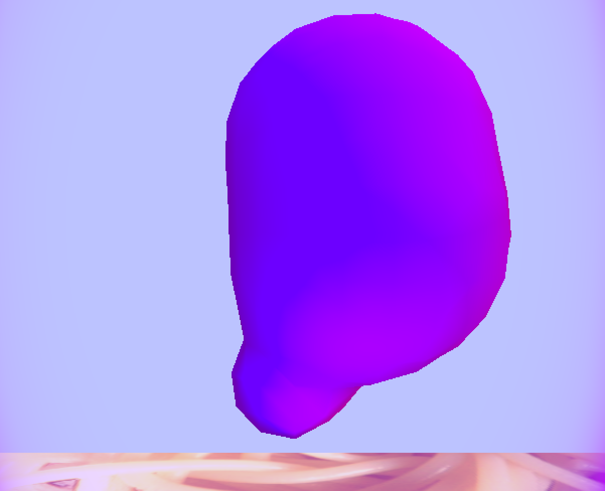
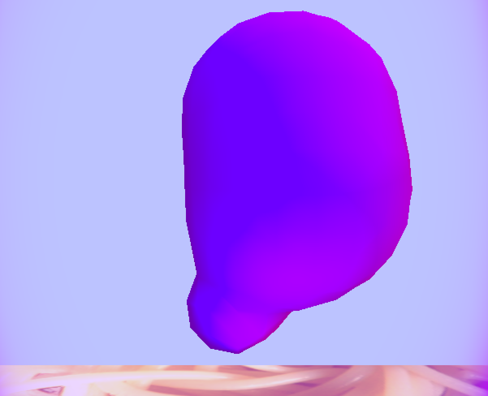

We were very interested in how metaballs are able to replicate amorphous surfaces and different fluid-like materials. At first, we wanted to try making putty or something malleable, but decided that the physics of the material would be too complicated. Instead, we decided to make a lavalamp by using the metaballs to create the inner "lava" and have it "glow" using interesting shaders.
To run:
make clean
make
./final
We implemented metaballs using the marching cubes algorithm by combining knowledge from several sources. By filling the space with an imaginary grid of cubes and sampling just the vertices of the cubes, rather than each pixel (which would be incredibly expensive and inefficient), we can look-up the edges between vertices that are on the metaball’s isosurface. Then we map triangles to interpolated points along the edges of the marching cubes to comprise the surface of the metaballs. By using a threshold variable to check if another metaball is within range of its force field we can extend the isosurface of triangles between two metaballs which gives it the sticky, lava-like properties.
In order to make a more realistic shape from the metaballs without worrying about physics simulations, we made the metaballs all have different radii. Because of this, the entire lava looks fluid and like each piece that drops is created organically in the momement, as they mix around and appear at different times.
We were able to nail down the marching cubes and metaballs in the first half of our project time, and spent the rest trying to best replicate the periodic, up and down random motion typical of a lava lamp. First, trying to incorporate the boundaries of the lamp ellipsoid into our changeMetaballPos() function proved very difficult. We spent hours meticulously trying to get the metaballs to interact with the walls in a squishing way or at least not extend past the boundaries but because of the complex nature of the isostatic surface built around a fixed center point that is being updated on multiple threads, this was very difficult and we never quite got it working. We did however achieve a lava lamp flow that seemed pretty realistic.
 

In order to make a nice "glow" for the lava, we adapted the diffuse fragment shader to take into account the normals of the metaballs, which gave them a dual-color effect. We added the color of the lava times the normal to the intensity of the color, which made them blue away from the lamp light and purple and red towards the lamp light and top light.
Another shader that we worked with was to make a translucent outside for the lavalamp itself. We set its opacity to be dependent on the fresnel cooeficient, which made it thicker towards the edge of the case from each view. The fresnel cooeficient is generally calculated for refraction/reflection, which was attempted but sadly did not end up happening. Regardless, it helps to add depth to the case of the lamp.
We originally wanted to include a fun shag carpet for the floor to match the lava lamp, but found that upon generating the normals in Photoshop, the texture reminded us of spaghetti. Accordingly, we replaced the floor with an image of spaghetti that we found and generated a normal mapping of in Photoshop.
Normal Mapping
The image itself
The resulting texture and normal mapping, showing some shiny noodles
Because we were making a fairly static object (a lamp), it did not make sense to worry too much about keeping all of the picking functionality. This means that the only movement we have is the eye camera, so that the user can still zoom in and out and move around the lamp to see it from different angles. The arcball does not appear, but the camera can still be moved in the same way: left click to rotate, right click to translate, and right click + space bar to translate in the z-direction, which may be usefull initially to zoom out of the environment.
The lamp case is made from an ellipsoid shape that was generated in a similar way as the earlier pset's spheres and cubes. It has a purple light at the base of it, and is meant to generally resemble the actual shape of a lava lamp. This is instead of obtaining the actual mesh for one, which would be very complicated as we have seen from the use of canonical meshes for most graphics testing purpose.
One thing that we got to work to an extent was to bound the metaballs inside the lamp case. This was difficult because we needed to adapt complicated triginometric functions for their environment, which were used to make the movement seem as natural and organic as possible. However, there is still some slight escaping of the metaballs from the lamp boundary, mostly on the top and bottom where the radius is smallest.
Something we tried very hard to figure out but were ultimately not able to do was to use CubeMap to map a texture across the inner walls of the environment, and to use this texture to simulate a refraction of the lamp case to make it look more glass-like. We were ultimately unable to figure out how to gather the CubeMap and send it to the fragment shader for use refraction as a samplerCube. Instead, as mentioned, we simply used a fresnel value to calculate the thickness of the edge in the camera view in the glass-gl3.fshader shader.
We also tried different options in the fragment shader for the metaballs, and decided that the style we chose looked the most interesting and reminiscent of what a lavalamp should look like.
By trying to implement the CubeMap and the refraction, we learned a lot about the specifics of how OpenGL works with textures, which had gotten lost throughout the homework assignments. It was interesting to see how complicated each step is, and also very fun to see the different skybox textures that people had created and put online. In our media folder, there are the texture panels we were planning on using for the cubeMap. Hopefully we will be able to figure this out at some point for fun, after the project.
We researched a lot about how to make shaders for different effects, like reflection and refraction. It was very cool to see how easily one could replicate basic physics with some calculations and the samplerCube, especially how we could use different indexes of refraction to simulate different types of clear materials (like air, water, diamond, etc).